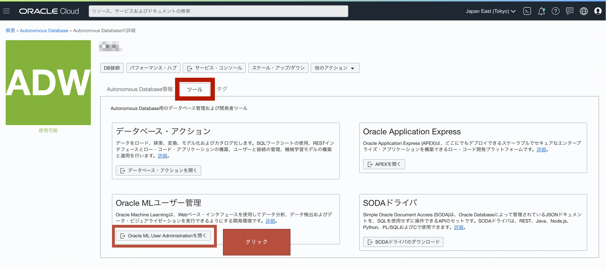
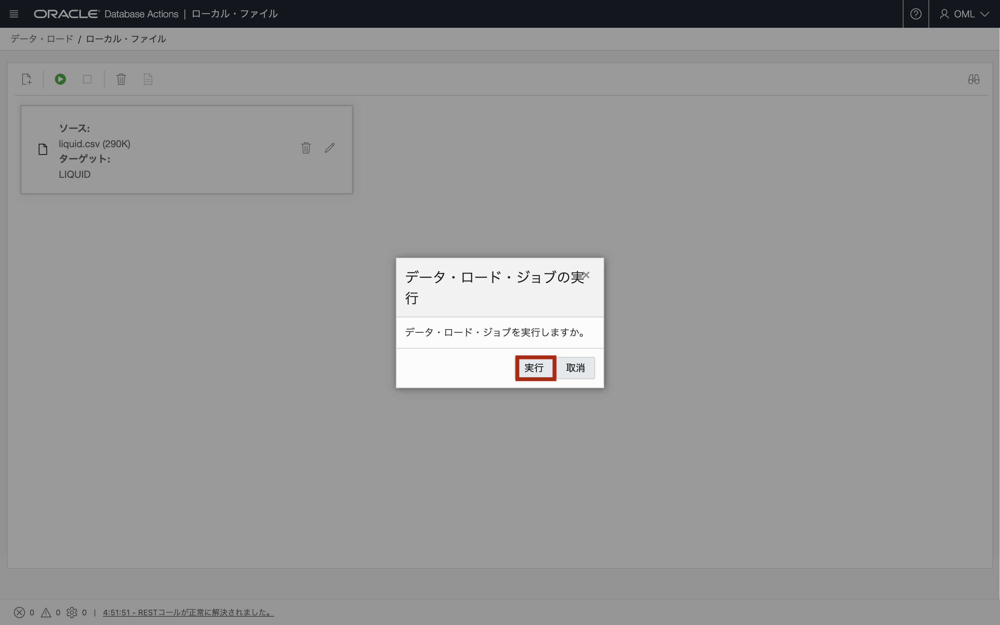
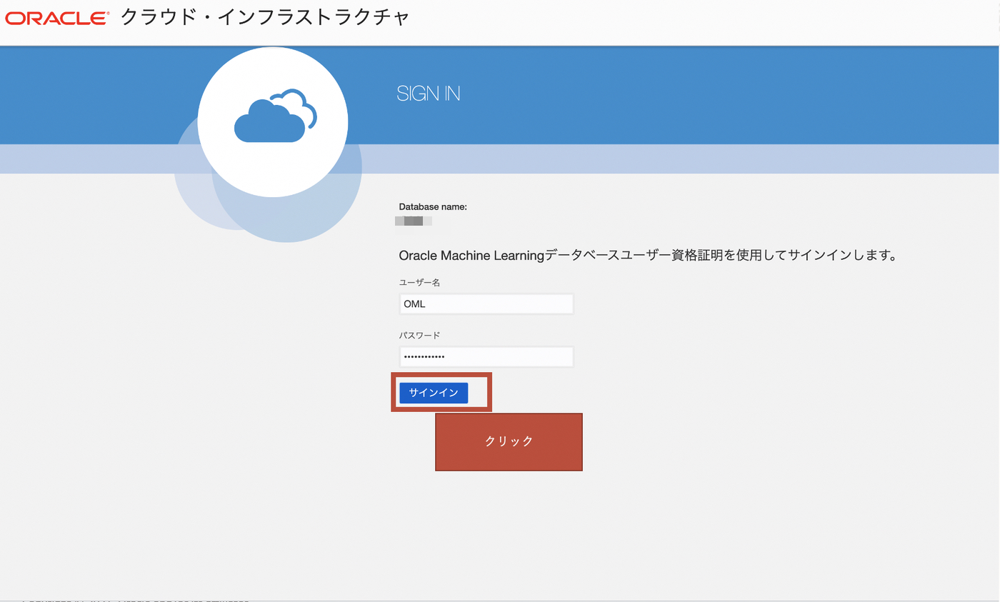

はじめに
この章ではOracle Machine Learning(OML)の製品群の1つである、OML Notebookを利用して、DB内でデータの移動が完結した機械学習を体験して頂きます。
事前に前提条件にリンクされているサンプルデータのCSVファイルをお手元のPC上にダウンロードください。
（集合ハンズオンセミナーでは講師の指示に従ってください）
前提条件
- ADBインスタンスが構成済みであること
※ADBインタンスを作成方法については、101:ADBインスタンスを作成してみよう を参照ください。 - 以下にリンクされているファイルをダウンロードしていること
目次
所要時間: 約40分
準備編
OMLユーザを作成する
-
ツールタブのOracle MLユーザ管理で、MLユーザを作成していきましょう。

-
ADBのADMINユーザの情報を入力し、サインインをクリックして下さい。
 。。
。。 -
+作成ボタンをクリックし、機械学習用のユーザを作成します。

-
ユーザーの情報を入力し、画面右上作成ボタンをクリックして下さい。

-
ユーザOMLが作成されたことを確認し、ADW詳細画面へ戻ります。

作成したOMLユーザのRESTサービスを有効化する
後述のデータロードをステップで、OMLユーザでDatabase Actionsを活用していきます。 OMLユーザーは作成後、RESTを有効化しないとDatabase Actionsにログインできないので、OMLユーザのRESTを有効化していきましょう。
-
ADBインスタンスを作成しようで学習したDatabase Actionsを利用したインスタンスへの接続 を参照し、Database Actionsを起動し、Adminユーザーで接続してください。ツールタブから、データベース・アクションを開くをクリックしてください。

-
ADMINユーザでサインインして下さい。

-
Database Actionsのランディングページからデータベース・ユーザ を選択します。

-
作成済のOMLユーザを確認することができます。

-
OMLユーザのオプションボタンからRESTの有効化をクリックして下さい。

-
REST対応ユーザーをクリックして下さい。

-
OMLユーザにRESTの有効化のマークを確認することができます。

-
画面右上のADMINをクリックし表示されたドロップダウンメニュから、サインアウトをして下さい。

-
作成済のOMLユーザでサインインして下さい。

データセットをADBにロードする
liquid.csvをDatabase Actionsからロード
-
Database Actionsのランディングページのデータ・ツールから データ・ロード を選択します。

-
データの処理には、データのロード を選択し、データの場所には、ローカル・ファイル を選択して 次 をクリックします。

-
ファイルの選択をクリックし、ダウンロードして解凍した liquid.csv を選択します。

-
liquid.csvがロードできる状態になりました。ロード前にペンアイコンをクリックし、詳細設定を確認・変更できます。

-
liquid.csvの表定義等のデータのプレビューを確認したら 閉じる をクリックします。

-
緑色の実行ボタンをクリックし、データのロードを開始します。

-
データ・ロード・ジョブの実行を確認するポップアップが表示されるので、実行 をクリックします。

-
liquid.csvに緑色のチェックマークが付き、ロードが完了しました。完了をクリックします。

order_items.csvをObject Storageにアップロード
-
ADBインスタンスを作成しようで学習したオブジェクトストレージへのデータアップロード を参照し、order_items.csvをObject Storageにアップロードして下さい。

機械学習編
OML Notebookを使い始める
-
ADW詳細画面のサービス・コンソールをクリックして下さい。

-
サービスコンソール画面左の開発をクリックして下さい。

-
サービスコンソール開発タブ内の、Oracle Machine Learningノートブックをクリックして下さい。

-
先ほどOMLユーザ管理で新規作成したユーザ(OML)でサインインして下さい。

-
クイック・アクションのノートブックをクリックして下さい。

-
任意のノートブックの名前を入力後、OKをクリックして下さい。

-
新規作成したノートブック名をクリックして下さい。

-
ノートブックの画面に遷移して下さい。

-
作成したノートブックでスクリプトを書き始めることが可能になりました。
下記のコマンドでPythonで機械学習を書き始めることが可能です。
%python import oml oml.isconnected()
下記のコマンドで、同じノートブック内でSQLを使用したLiquid表へのクエリを実行してみましょう。
%python select * from liquid;
機械学習モデルをビルド・評価する
以降、こちらの資料を見ながら実施していきます。
また、以下のリンクから直接資料をダウンロードすることも可能です。
資料内で使用するSQLは、下記のHandson_SQL.txtを確認することが可能です。 手入力ではなくコピー＆ペーストして学習を進めていくことができます。
ハンズオンの内容
・液体の品質の予測を行う

・アソシエーション分析を行う
以上で、この章は終了です。
次の章にお進みください。